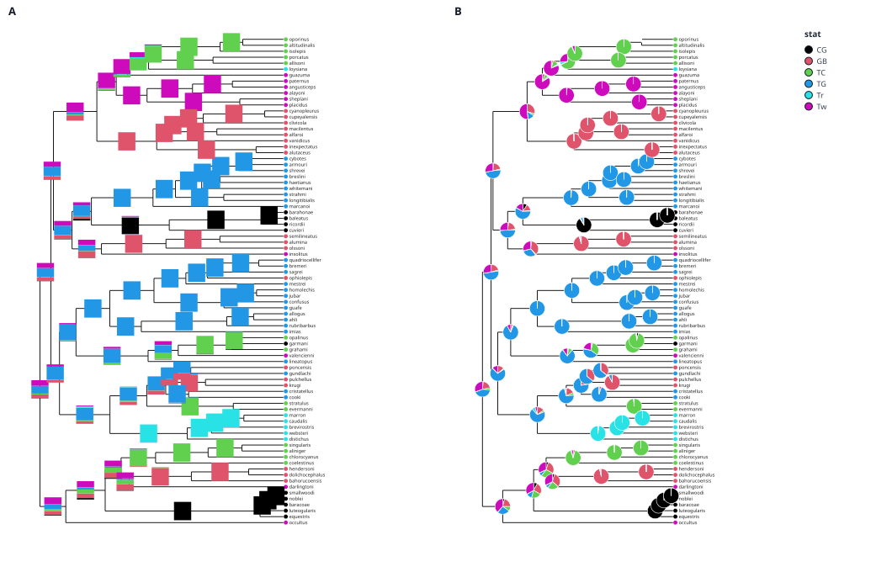
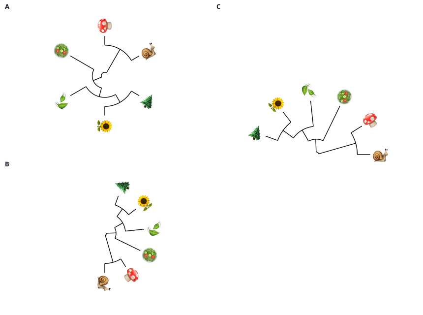
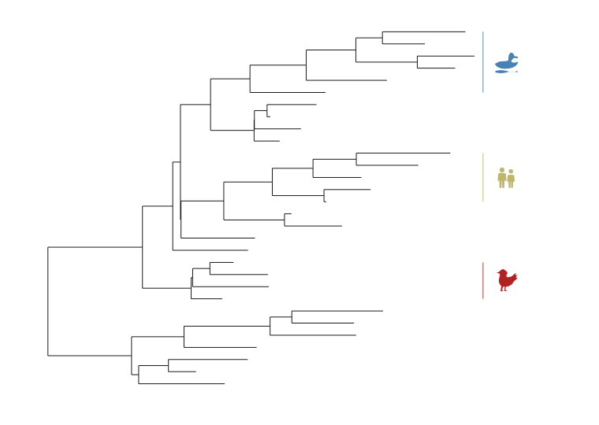

8. Annotating Tree with Silhouette Images and Sub-plots
Photographic tip images, taxonomic silhouettes, ancestral probability subplots, and phylomoji icons communicate biological identity immediately alongside branch structure.
8.1 Annotating Trees with Images (geom_tiplab & geom_image)
Map local JPEG/PNG image paths directly via geom_tiplab(geom='image') aligned to tips or embed standalone canvas badges using geom_image().

▶ Show / Hide Python Code read_treegeom_tiplabgeom_imageDataFrame
from ggtree import read_tree, DataFrame, system_file, ggtree, aes, geom_tiplab, geom_image, xlim, ylim
nwk = "((((bufonidae, dendrobatidae), ceratophryidae), (centrolenidae, leptodactylidae)), hylidae);"
imgdir = system_file("extdata", "frogs")
x = read_tree(text=nwk)
df = DataFrame({"label": x.tip_label, "img": [f"{imgdir}/{t}.jpg" for t in x.tip_label]})
p = (
ggtree(x) % df
+ xlim(None, 7)
+ ylim(None, 6.2)
+ geom_tiplab(aes(image="img"), geom="image", offset=2, align=2, size=0.2)
+ geom_tiplab(geom="label", offset=1, hjust=0.5)
+ geom_image(x=0.8, y=5.5, image=f"{imgdir}/frog.jpg", size=0.2)
)
p
8.2 PhyloPic Organism Silhouettes
Resolve taxon names cleanly via phylopic_uid() and color vector silhouettes along discrete or continuous biological covariates such as body mass.

▶ Show / Hide Python Code read_treephylopic_uidgeom_tiplabscale_color_viridis_c
from ggtree import read_tree, phylopic_uid, ggtree, aes, geom_tiplab, xlim, scale_color_viridis_c
newick = (
"((Pongo_abelii,(Gorilla_gorilla_gorilla,(Pan_paniscus,"
"Pan_troglodytes)Pan,Homo_sapiens)Homininae)Hominidae,"
"Nomascus_leucogenys)Hominoidea;"
)
tree = read_tree(text=newick)
d = phylopic_uid(tree.tip_label)
d["body_mass"] = [52, 114, 47, 45, 58, 6]
p = (
ggtree(tree) % d
+ geom_tiplab(aes(image="uid", colour="body_mass"), geom="phylopic", offset=2.5, size=6.5)
+ geom_tiplab(aes(label="label"), offset=0.2)
+ xlim(None, 7)
+ scale_color_viridis_c()
)
p
8.3 Ancestral State Reconstruction & Sub-plot Insets
Compute marginal ancestral likelihoods with ace(..., model='ER', type='discrete'), construct nodebar() and nodepie() micro-charts (including mixed mixes), and overlay them using geom_inset().

▶ Show / Hide Python Code getStatesacenodebarnodepie
from ggtree import (
read_tree, DataFrame, system_file, getStates, ace, nodebar, nodepie,
ggtree, aes, geom_tiplab, geom_tippoint, geom_inset, scale_color_manual,
xlim, theme, plot_list,
)
anoletree = read_tree(system_file("extdata", "TDbook", "anoletree.nwk"))
x = getStates(anoletree, "tips")
cols = {"CG": "black", "GB": "#DF536B", "TC": "#61D04F", "TG": "#2297E6", "Tr": "#28E2E5", "Tw": "#CD0BBC"}
fitER = ace(x, anoletree, model="ER", type="discrete")
ancstats = fitER.lik_anc.copy()
ancstats["node"] = [int(r) for r in fitER.lik_anc.rownames]
bars = nodebar(ancstats, cols=fitER.states, color=cols, position="stack")
pies = nodepie(ancstats, cols=fitER.states, color=cols)
stat_df = DataFrame({"label": list(x.keys()), "stat": list(x.values())})
p_left = (
ggtree(anoletree) % stat_df
+ geom_tiplab(size=2.0)
+ geom_tippoint(aes(color="stat"), show_legend=False)
+ scale_color_manual(values=cols)
+ theme(legend_position="none")
+ xlim(None, 8)
)
p1 = p_left + geom_inset(bars, width=0.05, height=0.03, x="branch", show_legend=False)
p_right = (
ggtree(anoletree) % stat_df
+ geom_tiplab(size=2.0)
+ geom_tippoint(aes(color="stat"))
+ scale_color_manual(values=cols)
+ theme(legend_position="right")
+ xlim(None, 8)
)
p2 = p_right + geom_inset(pies, width=0.055, height=0.055)
plot_list(p1, p2, ncol=2, tag_levels="A")

▶ Show / Hide Python Code getStatesacenodebarnodepie
from ggtree import (
set_seed, sample, read_tree, DataFrame, system_file, getStates, ace,
nodebar, nodepie, ggtree, aes, geom_tiplab, geom_tippoint, geom_inset,
scale_color_manual, xlim, theme,
)
set_seed(84)
anoletree = read_tree(system_file("extdata", "TDbook", "anoletree.nwk"))
x = getStates(anoletree, "tips")
cols = {"CG": "black", "GB": "#DF536B", "TC": "#61D04F", "TG": "#2297E6", "Tr": "#28E2E5", "Tw": "#CD0BBC"}
fitER = ace(x, anoletree, model="ER", type="discrete")
ancstats = fitER.lik_anc.copy()
ancstats["node"] = [int(r) for r in fitER.lik_anc.rownames]
bars = nodebar(ancstats, cols=fitER.states, color=cols, position="stack")
pies = nodepie(ancstats, cols=fitER.states, color=cols)
pies_and_bars = dict(pies)
for k in sample(list(pies.keys()), 20):
pies_and_bars[k] = bars[k]
stat_df = DataFrame({"label": list(x.keys()), "stat": list(x.values())})
p = (
ggtree(anoletree) % stat_df
+ geom_tiplab(size=2.0)
+ geom_tippoint(aes(color="stat"))
+ scale_color_manual(values=cols)
+ theme(legend_position="right")
+ xlim(None, 8)
)
p + geom_inset(pies_and_bars, width=0.055, height=0.04)
8.4 Phylomoji and Apple Color Emoji
Render tip labels, circular/fan leaves, and monochrome clade annotations using parse='emoji' on rectangular, rotated fan, and Apple Color Emoji trees.

▶ Show / Hide Python Code read_treeggtreegeom_tiplabDataFrame
from ggtree import read_tree, DataFrame, ggtree, aes, geom_tiplab, xlim, ylim
tt = "((snail,mushroom),(((sunflower,evergreen_tree),leaves),green_salad));"
tree = read_tree(text=tt)
d = DataFrame({
"label": ["snail", "mushroom", "sunflower", "evergreen_tree", "leaves", "green_salad"],
"group": ["animal", "fungi", "flowering plant", "conifers", "ferns", "mosses"],
})
p = (
ggtree(tree, linetype="dashed", size=1.1, color="firebrick") % d
+ xlim(0, 4.5)
+ ylim(0.5, 6.5)
+ geom_tiplab(parse="emoji", size=15, vjust=0.25)
+ geom_tiplab(aes(label="group"), geom="label", x=3.35, hjust=1)
)
p

▶ Show / Hide Python Code ggtreegeom_tiplabopen_treerotate_tree
from ggtree import read_tree, ggtree, geom_tiplab, open_tree, rotate_tree, plot_list
tt = "((snail,mushroom),(((sunflower,evergreen_tree),leaves),green_salad));"
tree = read_tree(text=tt)
pA = ggtree(tree, layout="circular", size=1) + geom_tiplab(parse="emoji", size=10, vjust=0.25)
pC = open_tree(pA, angle=200)
pB = rotate_tree(pC, -90)
plot_list(pA, pB, pC, design="AC\nBC", tag_levels="A")

▶ Show / Hide Python Code rtreegeom_cladelabscale_color_manualDataFrame
from ggtree import set_seed, rtree, DataFrame, ggtree, aes, geom_cladelab, scale_color_manual, xlim
set_seed(123)
tr = rtree(30)
dat = DataFrame({
"node": [39, 48, 55],
"name": ["chicken", "duck", "family"],
})
p = (
ggtree(tr)
+ xlim(None, 5.2)
+ geom_cladelab(
data=dat,
mapping=aes(node="node", label="name", color="name"),
parse="emoji",
fontsize=12,
align=True,
show_legend=False,
)
+ scale_color_manual(values={"chicken": "firebrick", "duck": "steelblue", "family": "darkkhaki"})
)
p

▶ Show / Hide Python Code read_treeggtreegeom_tiplabxlim
from ggtree import read_tree, ggtree, geom_tiplab, xlim, ylim
tree_text = "(((((cow, (whale, dolphin)), (pig2, boar)), camel), fish), seedling);"
x = read_tree(text=tree_text)
p = ggtree(x, size=2) + geom_tiplab(size=20, parse="emoji") + xlim(None, 7) + ylim(None, 8.5)
p